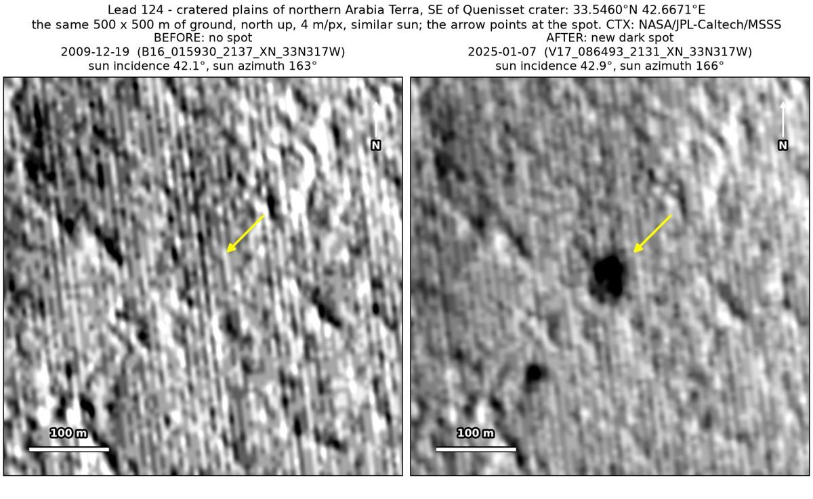
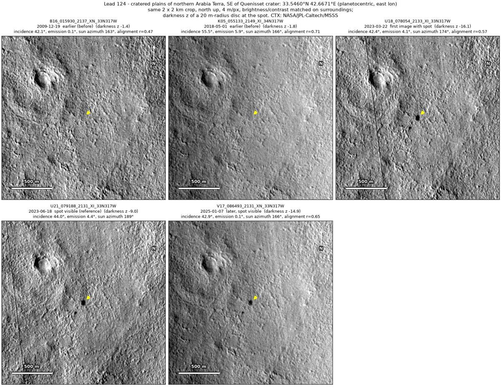
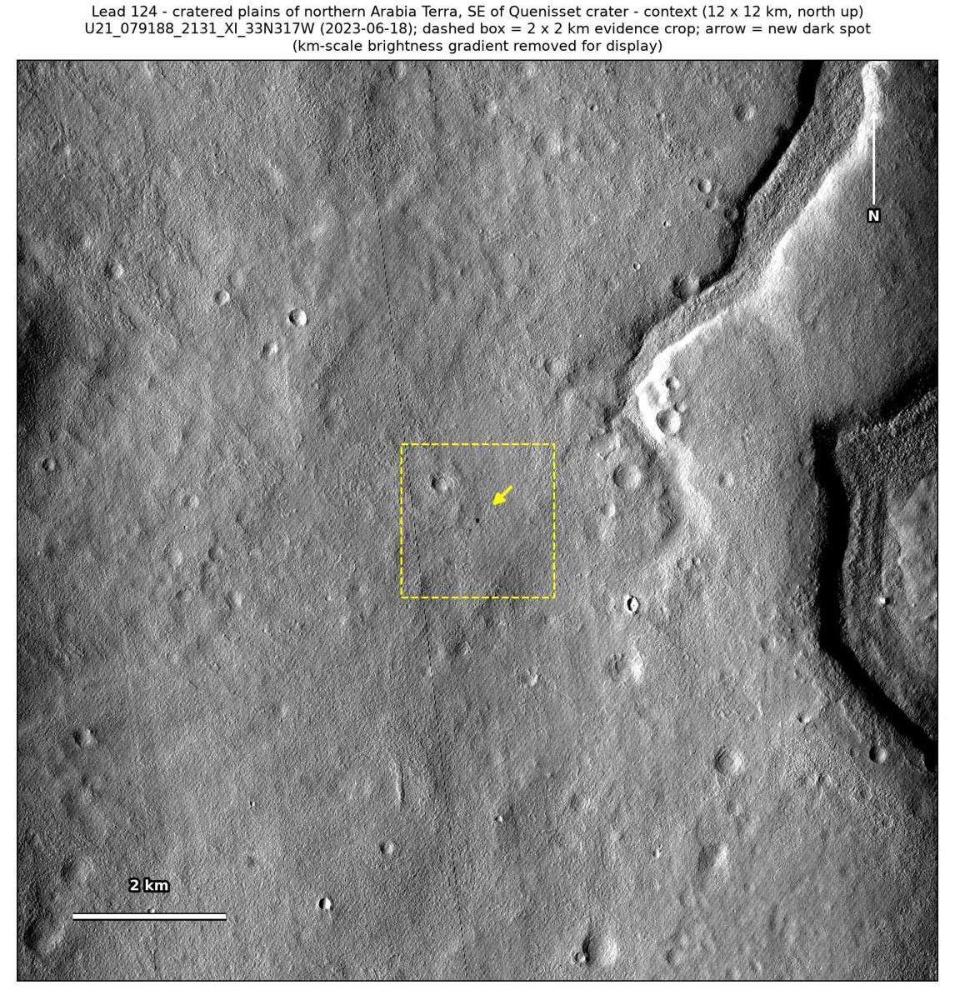

Professor of Mathematics
Paata Ivanisvili
Department of Mathematics, University of California, Irvine

← Possible new impact sites on Mars
Candidate 124: Cratered plains of northern Arabia Terra, south-east of Quenisset crater
Strong · roughly 90%

What changed. A compact dark spot about 40 m across, with a smaller new spot 154 m away and possibly a fainter third, appeared on cratered plains of northern Arabia Terra between May 2018 and March 2023 and is still there in January 2025, in three CTX images from three orbits.
Why it may be a new impact. Two earlier images, from 2009 and 2018, show no spot there, the December 2009 one under almost the same sun as the March 2023 and January 2025 images, while a dark feature 253 m away shows in both. The aligned before-and-after difference is deepest at the spot, with the smaller spot next, and compact, separate dark spots that stay in place in three images from three orbits, with no tracks, fit a small new impact.
- Location
- 33.546° N, 42.667° E
- Absent
- 19 December 2009 and 1 May 2018
- Present
- 22 March 2023, 18 June 2023 and 7 January 2025
- Size
- Compact dark spot about 40 m across (38 × 54 m in the June 2023 image), with a smaller new spot 154 m to the south-south-west
- Confidence
- Strong candidate; roughly 90% that it is a new impact.
- Caveat
- The dark feature used as a check only just passes the test in the December 2009 image, although the spot is far darker than that feature in every later image. It lies outside every footprint of the high-resolution HiRISE camera; the nearest ends 25 km away. Like every candidate here, it is unconfirmed: see the caveat.

